SQL Server 2016 Failover Cluster Instances in Azure
Microsoft recently announced additional support scenarios for using Guest Clusters in Azure. In this blog post, let’s have a look how we can build a two node SQL 2016 Guest clustering in Azure using Windows Server 2016 Storage Spaces Direct.
Utilizing Guest clusters in Azure enables mission critical application such as a SQL backend to function with greater availability if a single instance fails. By using Failover clustering and also placing virtual machines in an availability set, ensure that the application can work regardless of a hardware failure / Host updates or an application instance failure.
At the moment, following scenarios are supported in Azure using Failover Clustering
- SQL AlwaysOn Availability Groups
- SQL Server Failover Cluster Instances (detailed in this post)
- Scale-out File Server for hosting User Profile Disks when using Remote Desktop Services
In this blog post, we will be looking at SQL Server 2016 Failover Cluster Instance deployment in Azure utilizing resource manager deployment templates available on Github.
Deployment Architecture
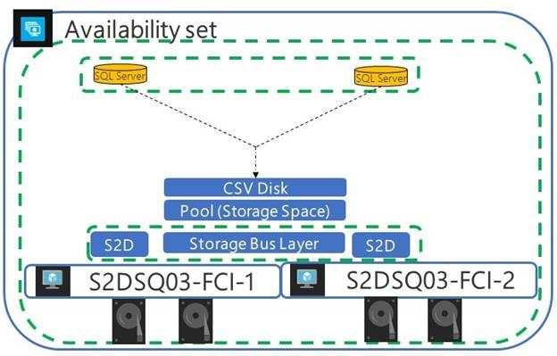
Template Link = https://aka.ms/azure-sql-server-alwayson-fci-cluster
Requirements
- Virtual machines are built using Windows Server 2016 and SQL Server 2016 images
- Requires existing VNET and also a Domain Controller
- Service Accounts to be provisioned, which will be later used by the Resource Manager deployment template
- Selected virtual machine size must support the number of data disks specified in the deployment template (Example standard_DS3_v2 only supports maximum up to 8 disks).
- Template creates Premium Storage Account for SQL virtual machines & a standard storage account for Cloud Witness.
- Virtual Machines are placed into a single availability set.
Step by Step deployment for SQL 2016 Failover Cluster in Azure using Azure Resource Manager Template
Step 01 – Use template link below and open it up in a browser
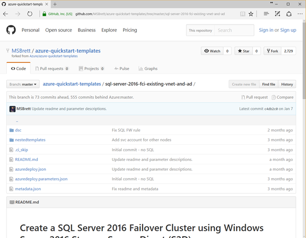
Step 02 – click on “Deploy to Azure” which will load this template into a custom template deployment within azure
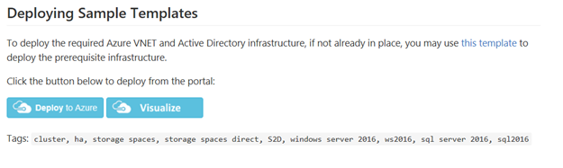
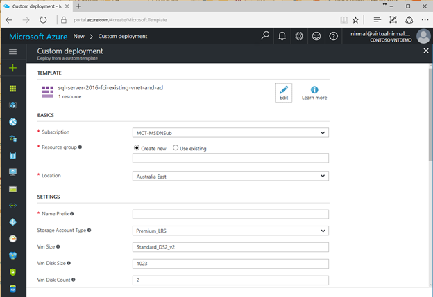
Step 03 – Fill in required parameters and hit deploy.
Basic Section
- Select the subscription in which you want to deploy
- Create a new resource group (which will help isolate resources relating to this deployment)
- Location – select your preferred location where you have a VNET created with connectivity to a domain controller.
Settings Section
- Name Prefix = provide a name between 3 charters and up to 8 characters. Provide a name prefix in lowercase otherwise, storage account creation will fail.
- Storage Account Type = Premium_LRS should be selected
- VM Size = depending on the workload, you could select the VM Size. Based on the selected VM Size, and the number of disks selected, data disks will get created during the deployment.
- VM Disk Size = 1023 (Maximum supported per disk in azure at the moment).
- VM Disk Count = 2 (depending on the chose VM, you could go up to 32 Disks)
- Existing Domain Name = domain name of your active directory environment (example contoso.local)
- Admin Username = administrative account in your active directory environment
- Admin Password = password
- Svc Username = SQL Administrator account name. must be a domain account
- Svc Password = password
- Existing Virtual Network Resource Group Name = Resource group name for existing VNET (example – NT-AUE-VNET-RG)
- Existing Virtual Network Name = Virtual Network Name (example NT-AUE-VNET)
- Existing Subnet Name = Subnet Name within your given VNET (Example Front-End)
- Cluster IP = Free IP Address which is not used or allocated
- _artifacts location = leave default – not required to be modified
- _artifacts location SaS Token = leave default – not required to be modified
Step 04 – Accept custom template, terms and conditions and select “I Agree to the terms & conditions after reading through”. Next click on Purchase, which will initiate the deployment process.
Step 05 – click notifications and select the deployment to check the progress of the build.
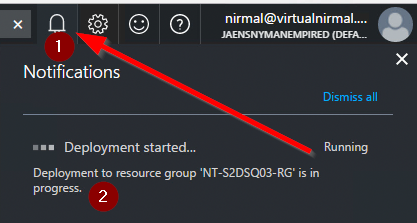
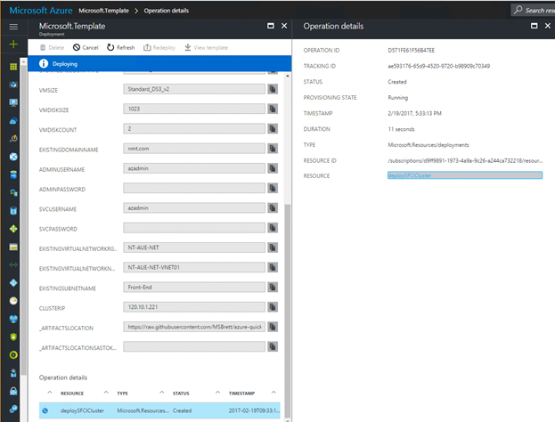
Clicking on the resource “DeploySFCICluster”, you will be able to see individual component status
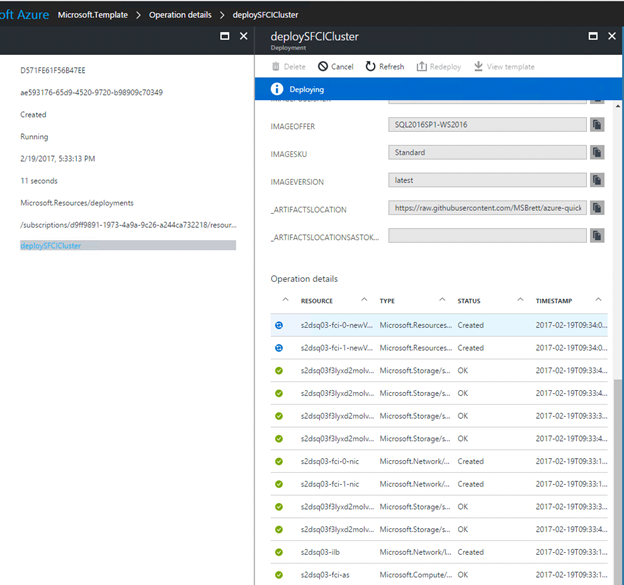
Deployment should take around 45 – 1 hour to complete.
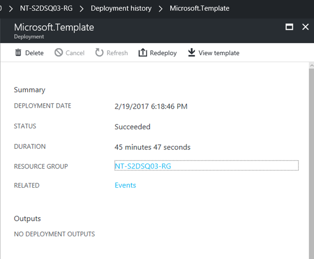
once completed, you will see completed notification as below.
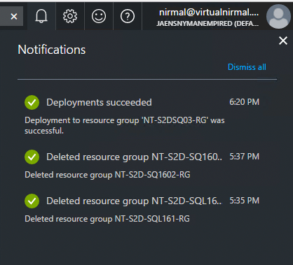
Step 06 – get local IP address of the VM and connect using remote desktop
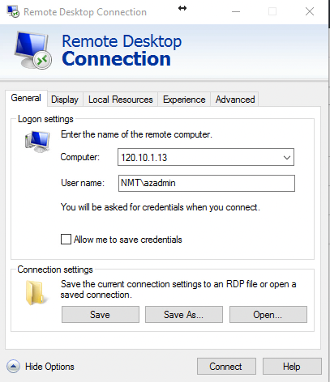
Step 07 – Open Failover Cluster Manager (Start menu -> Windows Administrative Tools -> Failover Cluster Manager). Looking at the screenshot below, we can validate that the cluster was successfully created.
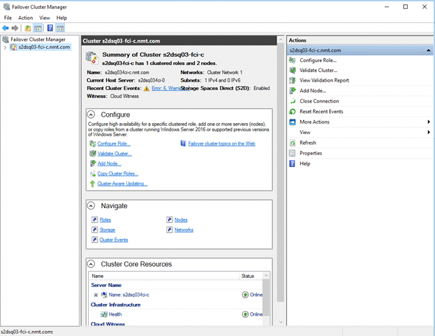
Next, we will go ahead and validate cluster roles to make sure that the SQL failover cluster installation is a success.
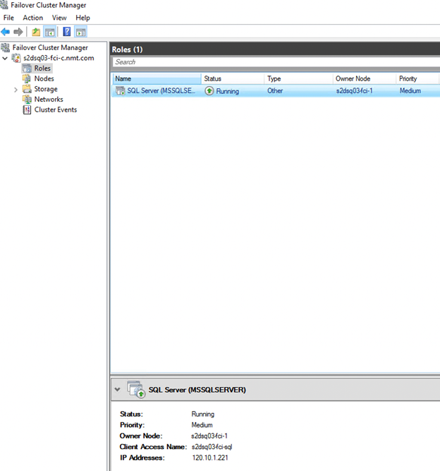
Next, we can navigate to Storage section within Failover Cluster Manager and verify Storage Spaces Direct configuration.
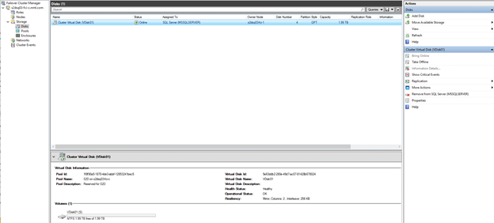
Storage Pool Summary
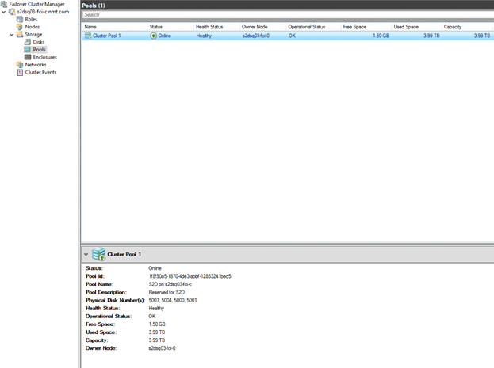
Physical Disks
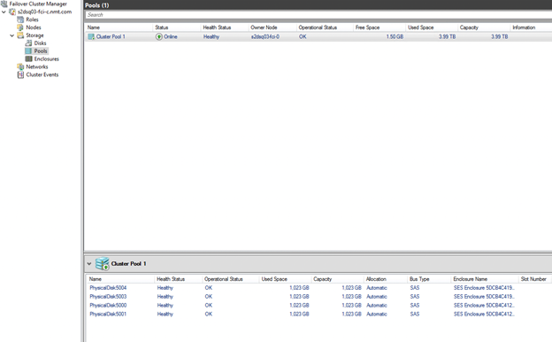
Cluster summary
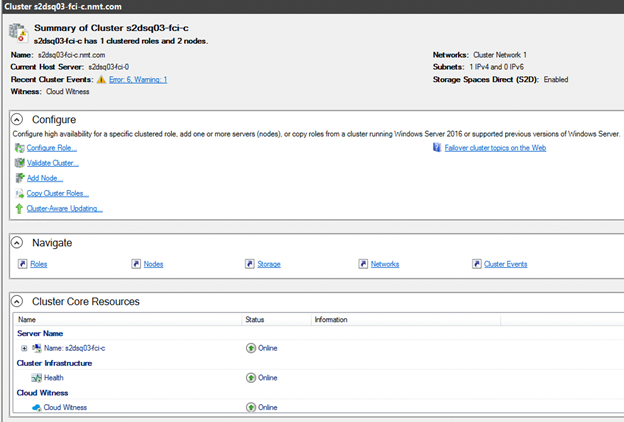
Step 08 – Open Microsoft SQL Server Management Studio (Star Menu -> Microsoft SQL Server 2016 -> Microsoft SQL Server Management Studio).
Login to SQL Failover Cluster Name
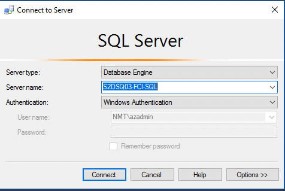
After you confirm that you can log in – create a sample database. Failover SQL resources to confirm that the services can failover to the other available node.
Select SQL Server Role and right click -> Move -> Select Node
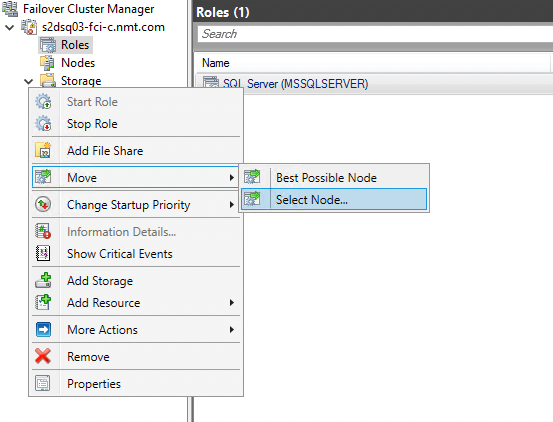
Select the other available instance
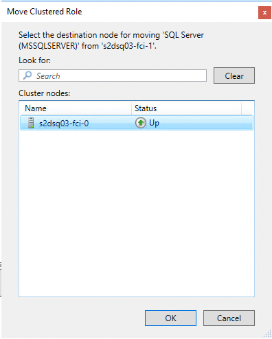
And click “OK”. After few seconds, services should start on the failover instance.
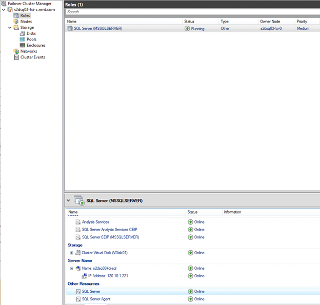
This blog post details, how to create a SQL Server 2016 Failover Cluster Instance in Azure using Windows Server 2016 Storage Spaces Direct. Please have a look at reference links below for more information. Any queries, please feel free to comment below or reach out to me via twitter (@nirmalmt)